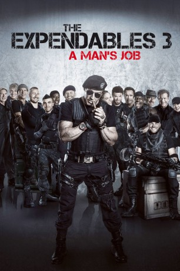

gesehen am 09.03.2015
gesehen am 09.03.2015Alternativ: The Expendables 3 gesehen am 09.03.2015
 
 IMDB-Wertung: 6.1 / 10
IMDB-Wertung: 6.1 / 10  Metascore:
Metascore: 
Barney Ross, Lee Christmas und ihr Team stehen vor ihrer größten Herausforderung: Conrad Stonebanks, der einst "The Expandables" zusammen mit Barney gründete, will dieser Gruppierung nun ein Ende setzen. Grund dafür ist wohl nicht zuletzt, dass Barney auf ihn angesetzt wurde, nachdem er sich als ruchloser Waffenhändler verdingte. Natürlich haben Barney und sein Team auch etwas gegen Stonebanks aktuelle Pläne. Barney trommelt seine Jungs zusammen und nimmt eine ganze Reihe weiterer Mitglieder in seine kampfstarke Truppe auf, Mitglieder die etwas jünger sind und über andere, meist modernere Techniken verfügen. Dann zieht die Gruppe gut gerüstet in den Kampf gegen Stonebanks und seine Leute. Aber, sind sie tatsächlich auf alles vorbereitet?
Jahr: 2014
Dauer: 126 Minuten
FSK: 16
Land: USA Studio: LionsgateTonspuren: DTS - ,
Untertitel: Deutsch,
Auflösung: 1080p (1920×800) Größe: 9236 MB
Genre: Action, Abenteuer, Thriller
Regisseur: Patrick Hughes
Drehbuch: Sylvester Stallone, Creighton Rothenberger, Katrin Benedikt, Sylvester Stallone, Dave Callaham
Soundtrack: Brian Tyler
Darsteller:
 Sylvester Stallone als Barney Ross
Sylvester Stallone als Barney Ross Jason Statham als Lee Christmas
Jason Statham als Lee Christmas Harrison Ford als Drummer
Harrison Ford als Drummer Arnold Schwarzenegger als Trench
Arnold Schwarzenegger als Trench Mel Gibson als Stonebanks
Mel Gibson als Stonebanks Wesley Snipes als Doc
Wesley Snipes als Doc Dolph Lundgren als Gunner Jensen
Dolph Lundgren als Gunner Jensen Randy Couture als Toll Road
Randy Couture als Toll Road Terry Crews als Caesar
Terry Crews als Caesar Kelsey Grammer als Bonaparte
Kelsey Grammer als Bonaparte Glen Powell als Thorn
Glen Powell als Thorn Antonio Banderas als Galgo
Antonio Banderas als Galgo Kellan Lutz als Smilee
Kellan Lutz als Smilee Jet Li als Yin Yang
Jet Li als Yin Yang Robert Davi als Goran Vata
Robert Davi als Goran Vata Velizar Binev als Art Broker
Velizar Binev als Art Broker Frank Pesce als Fight Watcher
Frank Pesce als Fight Watcher Bashar Rahal als Chief Commander , uncredited
Bashar Rahal als Chief Commander , uncreditedDatei: X:\FSK18-Collections\Expendables\Expendables 3 A Man's Job, The (2014, FSK16, 1920x800).mkv seit 16.02.2015
Festplatte: FSK18
 Alle Filme aus Gruppe 'FSK18-Collections\Expendables'
Alle Filme aus Gruppe 'FSK18-Collections\Expendables'